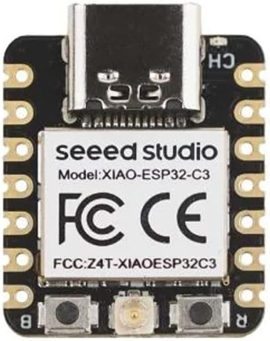
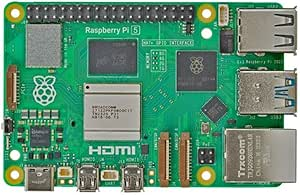

Featured Products
XIAO ESP32-S3-2,4 GHz Wi-Fi kort

Kraftfull MCU-kort: Inkorporera ESP32-S3 32-bitars,
dual-core, Xtensa-processorn som körs med upp till 240 MHz
monterad flera utvecklingsportar, Arduino/MicroPython stöds
- Pris: 229,30 kr
- Kategori: Elektronik
- Ranking: 4.5/5
Raspberry Pi 5 4Gb
Med en 64-bitars fyrkärnig Arm Cortex-A76-processor som körs i 2,4 GHz, ger Raspberry Pi 5 en 2-3x ökning av CPU-prestanda i förhållande till Raspberry Pi 4. Även grafikprestandan har fått ett ordentligt lyft med en 800MHz VideoCore VII GPU, vilket möjliggör dubbel 4Kp60 skärmutgång över HDMI och förbättrat kamerastöd från Raspberry Pi Image Signal Processor.
- Pris: 799,00 kr
- Kategori: Moderkort
- Rating: 4.7/5